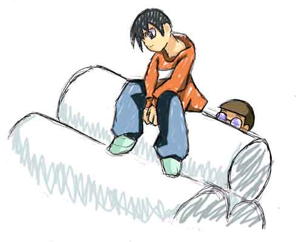
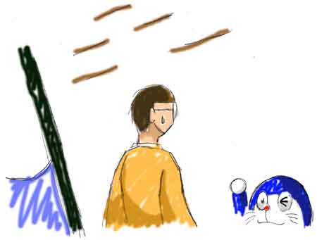
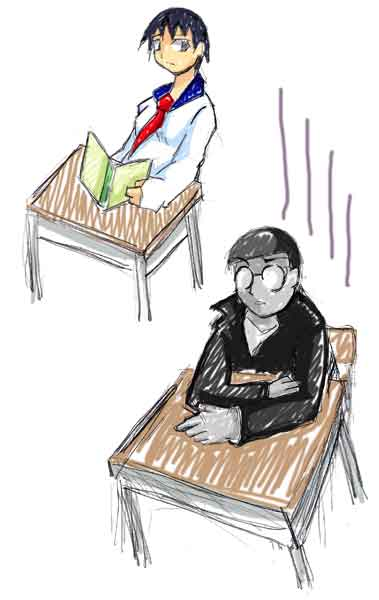
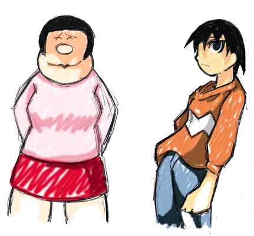
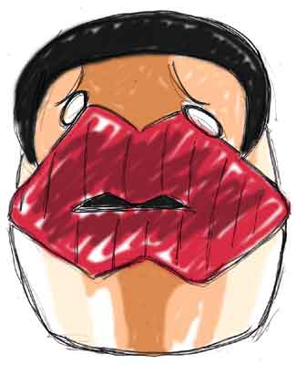
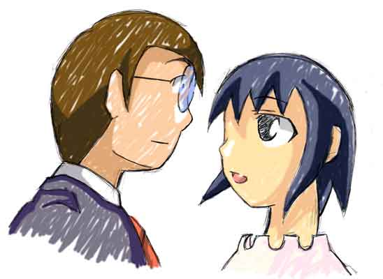

キーんコーンカーンコーン
ここは練馬区の小学校ある教室
「もしかして今日は学校休みぃぃぃぃぃぃ！！？？」
朝早く登校してジャイアン虐めの下準備を進めているのび太だったがあまりのショックに一瞬気が遠くなる
（そ、そんなバカなっ！僕は昨日から学校１の秀才になったんだぞっ！
それを土曜に登校するなんて大馬鹿やるなんて・・・）
「くそっ！
せっかくドアに挟んだ黒板消し（チョークタップリ）と椅子の画鋲と靴、机など備品へのラクガキというトラップを全て仕掛け終わったと言うのに・・・
今日は誰も来ないじゃないかっ！！」
そこまでやる時間あるなら気付け
しかしのび太はホームルームのチャイムが鳴るまで気付かなかった
この辺り所詮のび太はのび太である
ガラッ
のび太が苦悩しているその瞬間
再び教室のドアが開く
「あれ、遅れたと思ったけど誰もいねえな・・・
もしかして・・・
今日学校休みかァァァァァァァァァァァ！！？？」
絶叫するショートカット、ギザギザヘアーの少女
これこそ現在のジャイアンであった
どうやらのび太もジャイアンも多少肉体や性格に影響があってもその馬鹿さ加減は変わらないらしい
ボフッ
案の定黒板けしがジャイアンの頭にヒット
しかもよく見れば履いている靴にもラクガキがある
気づかずにここまで履いて来たのだ
土曜の祝日にここまで罠にかかりまくるアホはそうはいないだろう
「の、のび太っ！！テメーの仕業だな！！」
「いかにも・・・やはりひっかかったねジャイアン」
朝早くから対峙する馬鹿二人
その二人を止めるものは今や周りにはいない
というか彼等を止めるべきクラスメートは普通の常識人であるから休みの日に学校なんて来るはずもないのだ
ＡＣＴ１〜ポストチェンジ
「あ〜、残念だけどこの車４人乗りなんだよ。悪いけどジャイアンは無理ね」
「な、なんだとスネ夫っ！」
ポジションが変わっただけの妙にいつも通りの会話
しかし許せないのはのび太のヤツ・・・ではない
スネ夫のヤツだ
心の友と思っていたあいつがこんなにあっけなく手の平を返すなんて
「じゃあね〜」
「あ、待てっ！」
ブオオオオ〜ン
少女一人を置いて走り去る車
「・・・何だってんだよ」
どうせ大した事はないと思っていた
ドラえもんの関わった事件なら男が女になる事くらいあったじゃないか
それが何故しばらく経ってもずっとこのまんまなんだ？
後処理はどうしたんだ？
とぼとぼ歩いているとその足元に
コロコロ
土で汚れたボールだった
「おーい、ジャイアーン！！ボール投げてーーー！！」
外野の少年がボールを投げ渡してくれるように言ってくる
虫のいい事をっ！
俺が女になったら急に野球チームから放り出したくせに
誰が満足にバットも振れないだ？
誰が内野ゴロしか打てないだ？
いったい誰に向かってそんな口を聞いてるんだっ！
それはほんの数日前に実際言った台詞
でも帰ってきた台詞はこれだった
「だってジャイアン女じゃないか、女がキャプテンなんてチャンチャラおかしいよ」
「なんだと、この野郎っ！」
激昂して掴みかかったが
「放せよ、くすぐったいだろ」
バシッ
すぐさま跳ね除けられる
俺ってこんなに力がなかったのか・・・
いや、そんなはずはない
そんなハズは・・・
「ジャイアーン、早くボール投げてよーーー！！」
嫌な事を思い出してしまった
ハッとするジャイアン、手にはボールを握り締めたままだ
俺は非力なんかじゃない、見てろ
「そらっ！！」
力いっぱい投げたボールは外野の少年のはるか頭上を越えてホームベースまで・・・
————と言うのが彼女の思い描いたボールの軌道だった
しかし現実は
ポトッ
外野の少年の足元に落ちたに過ぎない
「なんだよジャイアン、こんな近いのに届きもしないのかよ」
「そ、そんな・・・」
信じられなかった
外野からホームまで届くほどの豪腕が見る影もない
しかも思い切り投げた後の肩が痛む
「ありがとよ、ジャイアン」
「あの・・・俺も・・・」
何を言おうとしているんだ？
俺も仲間に入れてくれ？
ガキ大将の俺が？仲間に入れろと頼むのか？
「ん、どうしたの？」
「・・・俺も入ってもいいかな」
それは彼の口からは出た事のない、しかし彼女の口には似合いすぎる台詞
「駄目に決まってるじゃんっ！
ジャイアンなんてメンバーが足りなくなってもいらないよっ！」
「なっ！？」
裏切られた
そう思えなくもない非情な受け答え
「ふ、ふざけんなっ！」
「行っくぞお〜！！」
抗議の声とは関係なく再開されるゲーム
もうジャイアンは恐れるに足る存在ではないのだ
「・・・なんで」
なんでこんな事になったのか
やっぱりあの時のび太についた嘘？
・・・それでものび太を責める気にはれなかった
だからと言ってこの事態を罰として素直に受け入れる事は出来ない
何より俺の居場所はどこ？
ジャイアンツのキャプテン
練馬区のガキ大将
スネ夫の親友
クラスで一番の力持ち
その全てが否定されていた
「空き地・・・空き地に行こう」
いつもあそこには誰かがいる
フラフラとした足取りで空き地までたどり着くのは時間がかかった
しかもそこには・・・
「誰もいない・・・か」
さすがに笑えなかった
———————いつもの３連土管の上
自称・俺の場所
ここに座っている時の気分はいつもハイで自分がどこか偉くなったような気持ちがしていた
でも今は違う
惨めだ・・・

ＡＣＴ２〜変わる周り、変わらない二人
———————ある日
「のび太さぁ〜ん、クッキー焼いたの。家に来ない？」
「うんいいよ」
「どう、美味しい？」
「うん、美味い。でも少し砂糖を入れすぎかな」
「へ〜、のび太さんて物知りね〜」
「まあね、家で家事も手伝ってるし。自然に料理は覚えるよ」
———————ある日
「のび太さあ〜ん、一緒に宿題しない？」
「ああゴメン、僕もう授業中に終わらせちゃったから」
「・・・そう、残念ね〜」
「答えを教えてあげるくらいはできるけど、どうかな」
「いいわ、自分でやる」
———————ある日
「のび太さん助けてっ！またカナリヤのピー子がどっか行っちゃたのよぉ〜」
「わかった、探そう。
でもどこに行ったかわからない鳥を見つけるのは至難の業だ。
それよりここで待っててごらん、その籠に戻ってくるかもしれないから」
「の、のび太さん探してくれないのっ！？」
「探すさ、でも君はここで見張っていた方がいい」
「・・・ありがとう」
「どういたしまして、じゃあ探してくる」
こんな調子ののび太に静香はだんだんと物事を頼まなくなっていった
確かに判断は的確なのだ
だが彼女の意味は？そこに居る理由は何だ？
のび太は一人で何でも素早くこなしてしまうのだ
「私・・・いなくてもいいのかな」
そんな事を思いながらの帰り道
「待てーのび太ぁーーーーーー！！！」
甲高い叫び声
「こーこまーでおーいでーーーー！！」
今度はのび太の声
「武さんとのび太さん・・・あの二人どうしていつも一緒にいるのかしら？」
もちろん小学生の２人だ
恋愛感情や罪悪感で付き合っているわけではない
今ののび太にはジャイアンを純粋に虐めるという目的があった
だがどうも相手が少女となるとふざけ合うようになってしまうのは、まだのび太に倫理感というものが残っているからだ
モラルそのものが枯渇してしまっているスネ夫とはワケが違う
そしてジャイアンもまだ女になって日が浅い
自分の状況はともかく、周りの反応を素直に受け入れられるハズもない
しかし世間はドラえもんの道具という事で簡単にその異常事態を受け入れた
恐るべし青ダヌキである
力と権力を奪われた今の彼女に何が残る？
友、スネ夫は以前と変わらないように接してくれるか？
それはありえない
あの男との仲はただの上下関係に過ぎなかったのだから
『上』の立場に立てるだけの権力を失った彼女に今なお従うわけはない
むしろ陰湿にからかってくるのだ
かと言って女子と戯れる事ができるか？
できっこない
だからのび太に絡む、相手をしてくれるから
悔しいし、そして寂しいからちょっかいを出す
彼女の認識ではこの時点ではただそれだけだった
のび太も生徒会の仕事や友人との付き合いの中でジャイアンをからかう
静香以外の女性に免疫のないのび太だ
それは少し新鮮な関係だったかもしれない
でもこっちだってただそれだけ
憎い、でもちょっと気になる女の子を虐めるだけ
ＡＣＴ３〜そして４年後の未来
それから４年の月日が経った
のび太は中学３年生
ある有名私立中学に通って・・・いるわけがなかった
確かに頭脳だけなら十分そのレベルに達しているのび太
しかし彼の家はローン持ち
おまけに働き手はパパ一人
とてものび太を私立中学になんかやる金はないのだ
スネ夫は金に物を言わせ・・・静香はその抜群の万能性でのび太とは違う世界のエリートコースに乗ってしまった
そして我等がジャイアンは結局のび太と同じ中学に通うという腐れ縁
仕方のないことだ、彼女は頭も悪いし家でも家業の雑貨屋を手伝う時間が長い
のび太との掛け合いも４年間継続中だ
もっとも今では周りには痴話げんかとして捉えられているのだが
ちなみにメインメンバーではないが出来杉は天才塾に入った
そんな以前とは違う人間関係
その中でのび太とジャイアンは・・・
「のび太、また宿題見せてくれよ。全然わかんねーんだ」
「またかい、ジャイアン」
「いいじゃんいいじゃん、心の友だろ」
宿敵と書いて『とも』と読む、そんな感じの二人
その関係はいまだに健在だった
のび太に親しげにちょっかいを出すジャイアン、それに特に嫌そうなそぶりも見せずに応じるのび太
もっとも辺りからの印象は多少変わってはいたが
「相変わらずのび太とジャイアンて仲いーよな」
「僕だったら弱くなったジャイアンなんて虐めの対称にしかしないけどね」
コレは小学生時代、ジャイアンに虐げられていたハル夫と安雄の台詞
どう考えても最低な事を言ってるがコレがかつてのジャイアンを知るものの認識だった
しかしのび太は今少し考えが違う
なんといっても頭がいい
４年も経てば社会の事や男女の生き方の違いなどは多少なりとも理解できるのだ
自分がやった事の重大さも当然わかる
ジャイアンだって今の状況が不安じゃないのか？
なのに何故こんなにいつまでも変わらずにいられる？
秀才になった今の頭脳でもその答えをはじき出す事は出来なかった
「野比っ！早く先を読まんかっ！」
「あ、すいません」
今は国語の時間だった
「・・・」
しまった
どこまで読んだか聞いてなかったっ！
優等生の僕としては極珍しいミステイクだな、誰か教えてくれないものか
「４２ページだよ」
「４２Ｐ」
「３段落目っ」
「１５行目」
様々な声が教室から上がる
のび太は以前のように馬鹿にされるべく存在ではないのだ
４２ページの１５行目か・・・
感謝のしるしをクラス中に示そうとするのび太
ソコで目に付くのが斜め後ろの少女
ジャイアン・・・
彼女はスースー寝息を立てて眠っていた
「ふふっ」
可笑しかった
自分がやった事の結果とはいえ、今のジャイアンの成績はそりゃあヒドイ
のび太がいなければ宿題もノート提出も、何もかも間に合わない
その遅さと馬鹿さ加減はもう問題を解く気がないようにさえ見える
今だって後何分か後にでも彼女は先生に叱り付けられるだろう
だってもうスグかけられるだろうから
「剛田っ！寝るなっ！」
「は、はいっ！」
跳ね起きるジャイアン
「じゃあ続きを読んでみろ」
「え、え〜と・・・」
「４４ページの３行目だよ」
今度の助け舟はのび太だけ、他のみんなは何を思ったか助けを出さなかった
「おう、サンキューのび太」
サンキューか・・・
どうしてジャイアンは僕に礼なんて言えるんだろう？
それだけはどうしても納得できない
喉に刺さった魚の小骨のようなものだ
いつもと変わらない彼女の態度、変わってしまった僕の性格
いや、正確には何もかも変わってしまった二人
だが二人がそれそれ変わったが故にその関係は続いてていた
今でも他に相手がいないのか、ジャイアンはいつも昔の調子でのび太に絡んでくる
それが全く以前と変わらないのが可笑しくてのび太も相手をする
相手をしてあげなければいけないような気持ちになる
ドラえもんと共に過ごした日々の非日常的な感覚は消え、罪悪感が生まれていた
彼女の未来を自分が壊した事からの罪の意識
そのせいか周りからはのび太が対応は４年前とは比較にならないほど好意的に見えた
４年後にはそんな関係が成り立っていた
ＡＣＴ４〜親友の来訪
「ど、ドラえもんっ！！？？」
「やあ、のび太君！」
「ど、どどどうしてここにっ！？」
これ以上ないほど動揺しまくるのび太
学校から帰ってきていつものようにふすまを開けたらそこに居た親友

ＡＣＴ５〜更に残酷な真実
「オイ野比っ！聞いとるのかっ！！」
「ああ先生、すいません・・・廊下に立ってます」
ガラリ
勝手に教室を出て行ってしまうのび太
それも小学生のときのようなリアクションで
「お、おい野比っ？」
先生も優等生としてののび太しか知らない故にコレには驚いた
「のび太の奴どうしたんだ？変なモンでも食ったのかよ？」
これはジャイアン
口から出る言葉は冷やかし以外での何物でもないがその眼差しは心配げだ
ちなみに制服着用は義務である

ＡＣＴ６〜そしてトドメ
「野比ぃいいいいいぃぃぃぃぃぃぃぃ！！！！」
ガツンッ
「げぶぅし！！」
今日も呆けた様子ののび太、さすがに教師の怒りが炸裂
「ここ２、３日たるんどるぞのび太っ！
お前とした事がなんだっ！今年はもう受験なんだぞっ！」
「はい・・・」
いつもに増して元気がないのび太
その目は赤く泣き腫らしたよう
「のび太・・・アイツ最近何やってんだ」
これまたジャイアン
つい数日前まで一緒に馬鹿やってきた仲としては気になる事態だ
もっとも今日はそれ以上に何かを気にしているのだが
今ののび太に彼女の様子の異常さを気づく余裕はない
その気持ちを知ってか知らずか、のび太は今日も放心状態が続くのだった
そして夜、昨日の続きが始まる
「のび太君、昨日までに言った事はゆっくり時間をかけて受け入れればいい。
でも今日の話は違う、絶対に目を背けないでね」
「・・・うん」
「君の新たな婚約相手の話だ」
「やっぱり静香ちゃん以外の女性なんだね」
「そう気を落とすなよ、運命は変えることだって出来るんだ」
「でもどの道静香ちゃんとはお別れなんだろ？」
「うん、それは実現しにくい未来だ」
「じゃあそんな話されても・・・」
バンッ
丸っこい腕で畳をたたくドラえもん
ママからの苦情は来ない
久しぶりに帰ってきたドラえもんとのび太との再開を気遣っての事だった
「静香ちゃん以外の女性が結婚相手になったらもう何もかもどうだっていいのかよっ！！」
「う、ううぅ〜」
「例え相手がジャイアンだとしても？」
「・・・」
「その様子じゃあそんなに驚いてないね」
意外そうな顔のドラえもん
もちろんのび太葉驚いていた
しかし何故かビックリマークが浮かんでこない
一時の復讐で女にしてしまった償いと言う言葉が心の奥で働いているのだろうか
それとも普段の掛け合いで心底慣れ親しんだ彼女ならあるいはとでも思っているのか
それは今ののび太にもわからなかった
「じゃあ僕はジャイアンと結婚するの・・・」
それでもいい
どこかでほっとする自分
「そうなればまだ良かった。彼、いや彼女は今や顔はまともだし性格も少しは女らしくなってるからね」
ドラえもんに顔の事言われたくないなぁ〜
そう思うのび太
「じゃあもっと悪いの？」
「うん、そりゃもう最低な奴だ」
「まさかスネ夫っ！？」
「それはありえない、スネ夫は性別を反転させてないだろう」
「そうだよねぇ〜、あー良かった」
「ちっとも良くない、歴史が元の悪夢の歴史に戻ってしまったんだぞっ！」
「え？」
一瞬ドラえもんが何を言っているかわからないのび太
え〜と・・・
初めがジャイ子で〜
そのあと静香チャンになって・・・
元に戻って〜
「ってジャイ子っ！？」
「そう言う事だよ」
「い、嫌だっ！
あの子だけはぜ〜〜〜〜〜〜〜〜〜〜ったいイヤだっ！！」
「うんうん、その気持ちわかるよ。
僕だってあの顔に囲まれての生活はもうウンザリしてるんだ」
「あの顔って・・・
まさかジャイ子ちゃん御懐妊するのぉぉぉぉぉぉ！！？？」
「うん、それも６人、変えたはずの破滅の未来そのまんまの人数だよ。」
あの顔相手によくそんなに作ったもんさ。
おかげで未来の子孫の顔や性格にまで影響が出ているんだ」
「ぼ、僕が・・・僕があんな肉だるまと・・・」
ショックを隠しきれないのび太
無理もなかった
「ど、どうしてそんな最悪の未来になってるんだよっ！
今の僕は平均水準以上の好青年なんだぞっ！！」
「そこがやっぱりのび太君なんだよなぁ。
君宛に今日ラブレターが届いているはずなんだけど」
「え、ええ〜！！」
顔を赤くして喜ぶのび太
これが悪夢の未来の第一歩だったというのに
「もしかして気づいてなかったの？今日の朝からずっとそのカバンに入ってるんだよっ」
そうなのだ
今日一日のび太はカバンも開けずにいたのだ
その中に入れられたラブレターに気づくはずもない
あわててカバンを引っ掻き回すのび太
「あ、あった！本当だっ！」
「僕が君に嘘なんてつくはずないだろ。さあ読んでみな」
「う、うんっ！」
——————————————————————————————
のび太さんへ
いきなりこの思いを告白する無礼をお許しください
一目見た時はずいぶんだらしない人だと思っていましたが今はそうは思いません
長く一緒にいるうちにあなたの優しさが伝わってきました
ずいぶん迷惑をかけたこともありますがその全てが今では大切な思い出です
この思いを直に伝えたいと思いますので明日の５時、いつもの空き地にお越しいただけないでしょうか
あなたを思う
——————————————————————————————
「こ、これしずかちゃんっ！？」
「・・・なわけないだろ、静香ちゃんがどうやって君のカバンにそんな恥ずかしい手紙入れるって言うんだ？」
「ちぇ、ドラえもんはすぐそー言う。言ってみただけだよ」
「本当は誰だと思う？」
「そうだな・・・となるとやっぱりずいぶん迷惑かけあった仲というとジャイアン？」
それほど嫌そうでもないのび太
そんな彼を見てドラえもんは哀れになる
「そう思う・・・？」
「え、違うの・・・だって他にこの文章で該当しそうな人物がいないじゃないか」
「未来の時間軸ののび太君もそう思ったみたい。
ほらっ、そう思って空き地に行った場合どうなるかこのタイムテレビで見てみなよ」
（コレは出来れば見せたくなかったけど・・・コレものび太君のためだ）
ＡＣＴ７〜我が人生最悪の時
「ホラ、僕が３日前にここに来なかった場合の君だ。
ラブレターに気づくのは２時間目。やっぱりこの世界でも君は相手がジャイアンだと思ったみたいだよ」
ドラえもんは静香ちゃんじゃなくてね、と付け加えたかった
タイムテレビの中ののび太
ジャイアンに時々ちらちらと視線を送りながら時々赤くなる
「そして明日、つまり約束の５時だ。
嬉しそうなのび太君、やっぱり相手がジャイアンで君は嬉しそうだ」
そこには確かに早足に、嬉しそうな表情を浮かべて空き地に向かうのび太があった
「そして空き地・・・人影は１つ」
「・・・やっぱりジャイアンじゃないかっ！」
そこにいたのは確かにジャイアンだった
「ここからはリアルタイムで見てくれよ、詳細がわかるから」
「一体何があるって言うんだ、呼び出された場所にジャイアンがいるんだぞ。
これでどうやったらジャイ子が出てくるって言うんだ？」
「見てなって」
——————————————————————————————
「あの・・・ジャイアン」
「よう、のび太」
その様子はどことなく悲しげ
恥
これから告白する女子が恥ずかしげというのは解かるが悲しげとは一体？
「呼んだよね？僕を」
「ああ、呼んだ」
「手紙をくれたよね」
「・・・ああ上げた。それで来てくれたってことはＯＫなんだな？」
「・・・今はまだ確実な答えは出せないけど・・・取りあえずはＯＫだと思う」
ここで二人で抱き合って喜べば、モニター越しで見ているのび太もちょっと赤くなって照れ隠しをするだけだったろうが・・・
現実はそれを遥かに邪悪に超えていた
その瞬間ジャイアンの顔が露骨に曇る
「そうか、アイツの事・・・妹の事幸せにしてやってくれ」
「はっ！？」
い、妹っ！？
「う、嬉しいわのび太さんっ！ずっと憧れてたんですものっ！」
土管の後ろから飛び出してくる肉塊、その名はジャイ子
比べてみると解かるがどう見ても姉妹には見えないこの二人
人種が違うのだから仕方ないかもしれない

ＡＣＴ８〜一握りの勇気
「ジャイアン、手紙読んだよ」
「あ、ああ。読んでくれたか・・・
————で？ちゃんと行くのか？」
「うん」
「そう・・・か」
やはり寂しそうになるジャイアン
妹の幸せと自分の好意との板ばさみか
でも今日で僕がその板ばさみから開放してあげるからね
「それについて一つ、約束の時間を変えてくれないか？」
「え、ああ。わかった。何時がいいんだ？」
「夜の９時」
「９時っ！？お前そんな遅くに・・・」
「わかったね、これはとても大切な事なんだ」
まっすぐにジャイアンの顔を見つめるのび太
「・・・わかったよ」
返ってきたのは了承の返事
彼女にも夜遅くに妹とのび太が会うというのは予想外の衝撃だったらしい
顔に少なからぬ動揺が見える
結局今日これから学校で交わした会話はさようならの一言だけだった
——————そして約束の５時を過ぎる
ただしそれは塗り変えられる前の歴史の話
更新された時間軸での約束の時刻は夜の９時なのだ
「の、のび太君今なんて言ったのっ！？」
「今夜ジャイ子と決着をつける。
道具は要らない、ドラえもんの言った通りだ。僕の力で未来を切り開く」
それは勇気のある決断だった
なにせ一度タイムテレビで悪夢の惨状を見てしまったのだからこの決断をのび太がしたことは嬉しく思うドラえもん
しかし場合が場合だ
「む、無茶だよのび太君っ！
相手はあのジャイ子なんだよっ！
僕の道具なしに勝てるわけないじゃないかっ！！」
半ば絶叫気味のドラえもん
そして対照的に落ち着きを払うのび太
「わかってる・・・でもヤッパリここで君の道具を使っちゃ僕は４年前の駄目人間に戻ってしまう」
「わかってないよっ！君は自分が言ってる事のリスクの高さを全然理解してないっ！」
このメガネは解かっていないのだ、その決断の意味を
「僕が自分の力で勇気を見せないとジャイアンだって認めてくれない」
「僕が帰ったあの夜と同じようになると思ってるんだねっ！
甘いよのび太君っ！大体ジャイアンに夜の空き地を見に来てほしいって言ってないじゃないかっ！」
「それでも彼女は来るはずさ、あの夜と条件が酷似しすぎているし何より運命的なものを彼女だって感じているはずなんだ」
「・・・今度バッカリは僕は反対だ。
君は今自分の人生を左右する重大な出来事に携わってるんだよ。
ハッキリ言って今日の君の行動は自殺行為だ」
「そうかもしれない、でもコレばっかりは譲れないよ」
ここ一番の時のこの男の決意はどんな事を言っても決して揺るがない
それを旧知の仲であるドラえもんは心底理解している
「・・・何を言っても無駄みたいだね。
いいよ、わかった。その代わり僕も君に一つ言う。
僕は決して見に行かないからね。タイムテレビも使わない」
「うん、僕はきっと帰ってくるからね」
「僕達は、だろ？」
「あそっか。じゃ、行って来るよ」
のび太は出かけていった、階段で足を滑らせることなく
（のび太君・・・君は本当に強くなった。
でも許してくれよ、僕は君を絶対に幸せにするからね）
ドラえもんもその数分後に空き地に向かうつもりなのであった
「変わるかな・・・未来」
これは二人が共通に言った台詞
ＡＣＴ９〜ファイナルミッション、未来を変えろ
夜の９時、コレが今の時間軸での約束の時間
４年前にドラえもんを見送った最後のけじめ、それが奇しくも今日この場所で再び行われる
「アタシをここに呼んだってことはヤッパリ・・・」
約束の時間の前に既にその場に来ていたジャイ子
気分は恋する乙女だろうがその様はどう見ても興奮したゴリラに過ぎない
「ああ、君と決着をつけに来た」
それは忌まわしい未来との決別、全ての元凶との決着をつけるという意味である
キッとジャイ子のデカイ顔を睨みつけるのび太
「嬉しいぃぃぃぃぃぃぃ！！！」
その眼差し意味を履き違えたようであの悪夢が蘇るような顔で突進してくるジャイ子
モニターで見るのと素で見るのとでは迫力が段違いだ

ＡＣＴ１０〜黄金の目覚め
「ジャイアン、ジャイアンっ」
必死の呼びかけも空しく腕の中の少女は目を覚まそうとしない
「も、もしかして・・・」
死っ！？
「そんなっ！！」
あわてて胸に手を置いてみる
プニッ
「うーん、柔らかい。これは間違いなく人肌の温も・・・じゃないっ！何をやってるんだ僕はっ！？
脈を録るなら腕でも首でもどこでもいいじゃないかっ！！」
一人漫才をしながらもそれはワザとではない
あくまで錯乱した状態での判断ミスだ
ドクン、ドクン
脈はある
「よ、よかった〜」
しかしそれなら何故目を覚まさない？
頭を強く打ったのか？
それともヒロイックな気持ちになってるとか？
もしくは呼吸困難で意識が・・・
「呼吸っ！！」
しまった
もっと早く確かめておくべきだった
・・・
口に手を当てるも全く息の流れを感じないっ！
「してないっ！呼吸をしてないぞっ！！」
それならやる事は決まっている、人工呼吸だ
「ああ〜、どきどきわくわく・・・じゃないってばっ！
え〜と・・・確かまず気道を確保して・・・それから一回人工呼吸を・・・」
一回か、そう言えばファーストキスだな
優しく・・・
って僕さっきからオカシイぞっ！！
こんなに心配してるのに頭が上手く働かないっ！
苦悩するのび太
しかし時間はない
「え〜いっ！やったモン勝ちがだっ！！」
意味不明な事を言いながら顔を近づけるのび太
しかしその表情は真剣そのもの
決して今までの怪しい言動は若さから来る暴走ではないのだ
「・・・何やってんだのび太」
「へ？」
目の前には顔を赤くしたジャイアン
その目はパッチリと見開かれている
「あ、え、え〜と・・・呼吸してなかったから・・・その」
唇を合わせようとした直前に目を覚ましたからいっそうバツが悪い
「い、意外と大胆なんだな。のび太」
「え、うん。まあ」
映画ではやたらと女の子に手を出しまくるのび太、当然手は早い
「・・・ん？ちょっと待てよ。ジャイアン起きてたのっ！？」
「一応さっきからな」
「じゃ、じゃあずっと僕のコト見てたのっ！？」
「見てはいなかったぞ。聞いてはいたけど」
「ど、どうしてっ！？心配したんだよっ！」
「俺が気絶していたらお前がどういったりアクションを取るのか知りたかった。そう思ってさっきは息を止めてたんだが・・・
そしたらお前はマジで俺にキスしようとするじゃないか、本気で心臓止まるかと思ったぞ」
「うっ！そ、それは・・・」
「まあな、でもこれくらいは勘弁しろ。
今までお前に散々からかわれたささやかな復讐だと思ってくれ」
「ひ、ひどいよジャイアン〜」
しかし心の中では全然ひどいとは思わなかった
『ささやかな復讐』
自分にかせられた罰はこの程度でいいのか？
いや、罰と自分に思い込ませようとすること自体が卑怯だ
一時の復讐心で人生を滅茶苦茶にしてしまった彼女を幸せに義務がある・・・
それが償い
償い・・・？
しかし先程の気持ちのどこにマイナスの要素があった？
後ろめたくて普通に彼女に許してくれ・・・の一言が言えないだけじゃないのか？
幸せにする義務があるというのも詭弁だ
幸せになりたいのは僕の方じゃないのか
「ん、どうしたのび太、ぼ〜っとして。それより状況はどうなったんだよ？ジャイ子は、それよりお前は大丈夫なのか？」
心配そうに覗き込んでくるジャイアン
のび太は一瞬で我に返った
「ドラえもんが助けに来てくれたんだ、きっともう終わってるよ」
「そうか、ドラえもんが・・・
ドラえもん！！ドラえもんだとっ！！のび太テメー隠してやがったなっ！！」
「う、それは・・・悪かったよ」
「みずくさいぜのび太、俺達・・・親友だろ」
親友、その前に少し言い淀んだのがのび太には嬉しかった
「３日前からだよ、ドラえもんが帰ってきたのは」
「３日前、最近か」
「本当はもっと早く言うべきだった、でもそれどころじゃなかったんだよ。ゴメンな」
「いいってコトよ、何よりめでたい事だしな。水を差すようなことは言わねえよ」
ここ２、３日ののび太の様子は確かに普通じゃなかった
ジャイアンも何かはわからないが事情を察したようだ
「じゃあ空き地に戻ろうか、ジャイアン」
「うん」
『おう』ではなく、『うん』
意図的に言ったのか自然に出たのかは今では解からない
でもそれはハッキリと力強く、のび太の耳にも聞こえていた
ＡＣＴ１１〜４年間
「いい加減にしろっ！この馬鹿豚女っ！！」
「なぁ〜んですってええぇぇぇぇぇぇぇ！！」
ドラえもんとジャイ子の戦いはまだ続いていた
「これが効かないなら次があるっ！！くらえっ！！熱線銃っ！！」
ビーム！
ちなみに土管や壁などのコンクリートが溶けかけている
「あ、熱っ！何すんのよっ！？肌は女の命なんだからねっ！！」
「く、これも大して効果ないかっ！！化け物めっ！
なら切り札だっ！！コレを聞いて驚くなっ！！」
そう言ってドラえもんが取り出したのはなんと見た目はただのキャンディー
しかしもちろん秘密道具の一つだ
「それが何だってのよ？」
「うふふふふふ、これには女に変わる前のジャイアンの声が登録されている。
僕がコレを舐めながらアノ歌を歌ったらどうなるかな・・・？」
「ま、まさか・・・」
「サビだけで君を失神させると断言するよ」
「や、やめなさいっ！！」
「もう遅いっ！！
ぼええええええええぇぇぇぇぇぇ！！！」
その歌声で練馬区中の動物という動物が恐怖を覚えたとか
「や、闇がぁぁぁぁぁぁぁ！！！
闇が迫ってくるうぅぅぅぅぅぅぅぅぅ！！！！」
ドスンッ
バッタリと倒れ伏すジャイ子
さすがのジャイ子も突然すぎて耳を押さえることができなかった
その音地獄なかで意識は一瞬も持たない
ジャイ子が気を失ったのを確認して
ペッ
ドラえもんはキャンディーを吐いた
そして周りを見渡すとカラスの死骸や割れたガラスなどが散乱しているのであった
その中に重なるように倒れている二つの影
のび太とジャイアンであった
「こ、こりゃあいけない！
早くお医者さんカバンで手当てしないと二人の命が危ないっ！」
急いで応急処置をして二人を蘇生させるドラえもん
その手つきは慣れたものだった
———————数分後
「じゃあな、のび太。今日は色々と迷惑かけたな」
ジャイ子の巨体を背負って帰ろうとするジャイアン
すっかり全快して体力は元に戻ったのだがその女の体はあまりにも非力すぎる
とても１００キロ近い肉塊を背負って家までたどり着けるとは思えない
「あの、ジャイアンっ！！」
「うん、どうした？」
「僕は、僕達は・・・」
グイッ
「うわっ」
言い終わる前にドラえもんの丸い手に引っ張られて再び空き地に連れ込まれるのび太
「ど、どういうつもりだよドラえもんっ！？」
「焦り過ぎだって、もうちょっと待ちなよのび太君」
「だって今はお互い素直になれてるんだよっ！？」
「だからこそだよ。
今は上手くいきかけてるんだしさ、未来の話はよそうよ」
「・・・」
「それに耳を澄ませばじゃあるまいし最後に『結婚』の話で締めれば万事ＯＫってモンじゃないよ。
せっかくいい関係になれたんだからここで未来の事を言ってお互い意識しない方がいいよ」
別に結婚しようと直接言うわけじゃなかったんだが
似たような事を言おうとしていたのは事実だ
「でもチャンスなんだよ。
せめて謝りたい、そして僕の気持ちを伝えるくらいイイだろう？」
「・・・そのくらいならいいか、男の見せ時だ。決めてきな」
「うんっ！」
再び歩道に出るのび太
ジャイアンはというとジャイ子が重すぎるのか、もうバテバテになっていた
「送るよ」
「お、重いぞジャイ子はっ」
「平気平気、こういうのはスポーツ万能な僕に・・・」
ズシッ
「うごあぁぁぁぁぁぁぁ！！！」
じゅ、重量上げやってるんじゃないんだぞ
何だこの体重は、よくさっきまで女のジャイアンが背負っていられたもんだ
「大丈夫かのび太・・・」
「ふ、ふふふ。何言ってんだよ、男の僕がこんな肉の塊の一つや二つで・・・」
もはや物扱いだった
スッ
「あれ、ちょっと軽くなった」
「手を貸すよ、そんな辛そうな顔されてて自分だけ手ぶらで歩いてるわけにはいけないからな」
後ろからジャイアンがジャイ子のケツを持ち上げていた
「・・・ゴメンよ」
「なんだよのび太、今日は謝ってばっかりだな。
だいたい謝りたいのは俺のほうだぜ、ジャイ子が迷惑かけまくったしな」
「違う、違うよ。そんなことじゃないんだっ。
僕がした事、僕が４年前に君にした事で謝りたいんだ」
「・・・」
「はじめは全然後悔してなかったんだけど今になると本当に申し訳なく思う。
僕のせいで君の一生が台無しになったんだからね」
「・・・」
「許してくれとも言わないし、責任を取るとも完全には言えない。
でも明日からも普通に接してくれないか？」
「・・・もういいよ。
その事はとっくに自分の中でケリをつけたから」
「僕の中で決着がついてないんだよ、
できれば一言言ってくれないか、気にしてないって」
「・・・ハッキリ言ってかなり気にしてる」
ガーン
だがそれも仕方のないことだ
一生恨まれても文句は言えない
いや、僕には文句を言う資格なんてないんだ
「・・・そうだよね、誰だって恨むよね」
「勘違いするな、気にしてるのはお前の事をだよ」
「！！」
ジャイ子の巨体のせいでジャイアンがどんな顔をしているかわからない
でも僕の顔はうれし泣きでグチャグチャだった
それがジャイアンの家までに元の顔に戻せなかったのは今では笑い話
顔を合わせた二人はただただ真っ赤になるしかなかった
ＡＣＴ１２〜トゥルーエンド
「コラっ！ノビスケっ！また０点取ったわねっ！いつもの事だけど今日は許しませんよっ！」
「ご、ゴメンよ〜、たまたまなんだってば〜」
十数年後のある一室でお小言は始まっていた
母親はショートカットの精悍なイメージの女性、本来なら３０歳付近の年齢なのだが童顔からかとてもそうは見えない
対する息子は小学生の頃のび太とそっくりな顔つき
当たり前だ
なぜならこの少年こそのび太の初の息子である野比ノビスケなのだから
「嘘おっしゃいっ！この前も０点の答案隠してたでしょう」
「ママだって子供の頃は０点ばっかり取ってたって言うじゃないか・・・」
ぼそっと呟いたノビスケの一言
「だ、誰がそんな・・・」
のび太のヤツだな
あいつノビスケにはスグ俺の恥ずかしい事言うんだから
「お、どうしたノビスケ、また０点とってママに叱られてるのか？」
丁度よく帰ってくるのび太
もう３０歳にはなったのだろうか
こちらも昔と違いメガネを取った愛嬌のある顔で、その年齢を悟らせない
「そうなんですよ、この子いくら言っても０点ばっかりで・・・」
「ははは、昔の君みたいだな」
「も〜、あなたのせいでしょうっ！」
「後悔してる？」
「・・・いいえ、全然」
見詰め合う二人、その絆はあの少年時代の友情とはまた別のものになっていた
「・・・パパとママ何言ってるの？」
１人ついていけない息子、ノビスケ
しかしここで更新前の未来とは違いが生じている
ノビスケは一人息子ではなかった
いや、厳密に言うともうすぐ一人息子ではなくなるのだ
今彼の母親のおなかには二人目の命が宿っている
人物は歴史の変化に関係なく存在する
確かに初めて会った時にドラえもんとセワシはそう言った
だがその人物を生む相手が違ったらどうだろう？
静香が結婚相手であった時はのび太の息子はノビスケただ１人
そしてジャイ子が結婚相手であった時はなんと６人も子供がいたのだ
果たしてジャイアンが母親として何人の子を産むのか？
それはまだこの時点では誰にも解からない
ただ窓枠に置いてある一枚の写真が幸せの大きさと、変える事のできた過去の喜びを写し出していた

ＡＣＴ１３〜エピローグ、２２世紀
「ドラえもんっ！！これどーゆー事だよっ！」
文句を言う少年、セワシ
のび太、そしてジャイアンの孫の孫に当たる
「ご、ゴメンよセワシ君。
まさかあの後あんなにいっぱい作るなんて・・・」
謝っているのはドラえもんだ
のび太を幸せにした後、彼はちゃんと未来に帰ったのだ
「何で僕が雑貨屋の跡取りになってるんだよっ！！」
「あの・・・それは、ちょっとした計算違いで・・・」
それは以前とは違った歴史だった
なんと子供を作りすぎた野比家ではワンパクな長男、ノビスケが就職という形で剛田家の雑貨屋を継いでいたのだ
コレはのび太夫婦とその両親達、そしてノビスケを含めた話し合いでの事だった
もちろん養子などといった形式的な形ではない、あくまで跡を継ぐというだけのソフトな形だ
だいたい我が子を手放すなどあの夫婦がしようハズもないのだから
まあ、長女が嫁に行くという中で家に残ったジャイ子があの性格ではこの歴史はやむおえないと言うしかない
「いくらジャイ子が駄目だからって、仮にも他の家に嫁いだ娘の子供を跡取りにするなんていいのかっ！！」
「で、でものび太君は約束どおりに幸せに・・・
それにコレは当人達も認めたことで・・・」
「おじいちゃんが幸せでも僕が不幸だよぉぉぉぉ！！！！
結局６人も子供作るなんて滅茶苦茶だああああぁぁぁぁぁぁ！！！！！」
「い、いいじゃないのセワシ君。
それに今や家は５代以上続いた立派な老舗中の老舗だよ」
「雑貨屋の老舗で威張れるかあああぁぁぁぁぁぁ！！！
他の雑貨屋が必要なくなって潰れてるだけじゃないかあああぁぁぁぁぁぁ！！！！」
地球破壊爆弾から生理用品まで産地直送、安くて安心、剛田雑貨屋
そんな意味不明なコピー
「別にねえ、そんなに大した違いは・・・」
「おじいちゃんのスケベーーーーーーー！！！」
騒ぎ立てるセワシ、どうやらドラえもんの苦労は当分続きそうだった
完
『４年経ってもジャイアンがあんまり女らしい性格になってない！！』
こんな事をお考えになる皆さんっ！ごもっともです、すみません（全認）
でもお考えください、前の話でのび太が言った嘘
『大した男』の反対は『大した女』です、それで女は度胸と言いますか・・・
え？
『大した男』の反対は『大したことのない女』だって・・・
はっ！！
そうでしたっ！しまったああああぁぁぁぁぁぁぁぁ！！判断ミスっ！！！痛恨の一撃ですっ！！！！
———————とまあ、言いワケがましい後書きになりましたが萌えというものはどうしても私には上手く表現できないですね
あと陰湿な復讐劇はもう一方のエンディング、【パターン２、バットエンド】でご覧ください
そちらはもうヒドイ出来です、苛めて苛めて壊れちゃって終わりです
ハッキリ言って駄作であれ以上続ける事が出来ませんでした
萌えとはまったく関係ないハードコアな部分をひたすら突っ走る失敗作ですが読みたい方は是非っ！
□ 感想はこちらに □